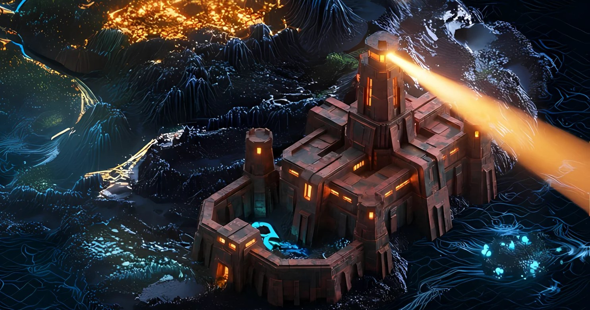

Record // CONSUMER PLAYABLE TEARDOWN
BEARPROOF BASTION

When the bear market was coldest, some people kept shipping. Mad Lads and Backpack are the proof.
What happened
On April 21, 2023, the team behind the Backpack wallet minted Mad Lads, a 10,000-piece NFT collection claimable only through Backpack. Mad Lads was the first high-profile xNFT — an 'executable' NFT whose code runs inside the wallet itself. Demand was so extreme it caused a denial-of-service-like load that knocked out two Solana RPC nodes and the project's UI, forcing a one-day delay. It became a defining bear-market product moment for Backpack, which later grew into a wallet and exchange.
Why Solana remembers it
Mad Lads showed a polished product and a novel primitive could capture mainstream attention even in a deep bear market, and it stress-tested Solana's RPC infrastructure under genuine load.
On the map
A fortified keep that drew so many pilgrims at once its walls briefly buckled.